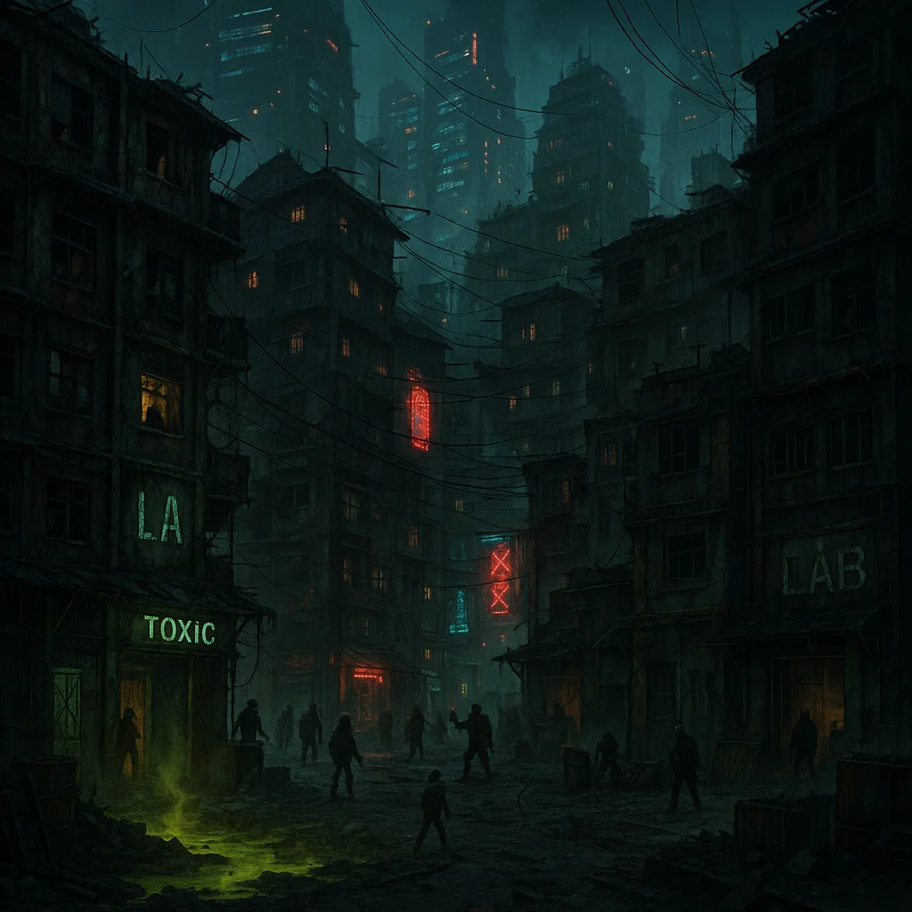

ARQUIVO URBANO — DISTRITOS DA MEGALÓPOLE SÃO PAULO ÔMEGA
NÍVEL DE ACESSO: CIVIL • DISTRIBUIÇÃO PÚBLICA
São Paulo Ômega é uma megalópole multiestratificada, expandida por séculos de fusão urbana,
colapso ambiental, reorganização política e engenharia territorial extrema.
Seus distritos não representam apenas divisões administrativas — cada um funciona como
um ecossistema urbano próprio, moldado por forças políticas, econômicas e culturais distintas.
As informações abaixo refletem apenas dados públicos e observações civis gerais.
Informações completas exigem credenciais de acesso elevadas.
Distrito Ômega-Central
Núcleo Administrativo
Perfil urbano: centro administrativo, jurídico e regulatório da megalópole.
Influência predominante: governança centralizada e institucional.
Observação pública: acesso é permitido; permanência prolongada é desaconselhada.
Distrito Neo-Paulistano
Elite Corporativa
Perfil urbano: concentração de torres corporativas, centros financeiros e inovação privada.
Influência predominante: tecnocrática e econômica.
Observação pública: circulação tolerada; integração social limitada.
Distrito Faixa Bandeirante
Industrial & Logístico
Perfil urbano: zona industrial pesada, ferroviária e de transporte massivo.
Influência predominante: produtiva e populacional.
Observação pública: ambiente hostil; incidentes operacionais são frequentes.
Distrito Favela Vertical
Habitação Superdensa
Perfil urbano: megablocos residenciais improvisados e empilhados.
Influência predominante: autogestão local e adaptação social.
Observação pública: circulação requer negociação social constante.
Distrito Zona Livre Leste
Contracultura & Autonomia
Perfil urbano: polo cultural alternativo, tecnologia aberta e experimentação social.
Influência predominante: descentralizada e comunitária.
Observação pública: criatividade elevada; estabilidade imprevisível.
Distrito Anel Espectral
Espiritual-Tecnológico
Perfil urbano: zona de fenômenos anômalos, templos tecnológicos e cultos híbridos.
Influência predominante: filosófica e experimental.
Observação pública: realidade perceptiva inconsistente.
Distrito Jardim Neotec
Biotecnologia & Luxo
Perfil urbano: integração de biotecnologia, medicina avançada e habitação premium.
Influência predominante: científica e elitizada.
Observação pública: ambiente controlado e artificialmente estável.
Distrito Morto-Oeste
Zona de Ruína

Perfil urbano: território degradado, instável e parcialmente abandonado.
Influência predominante: inexistente ou fragmentária.
Observação pública: alto risco estrutural e ambiental.